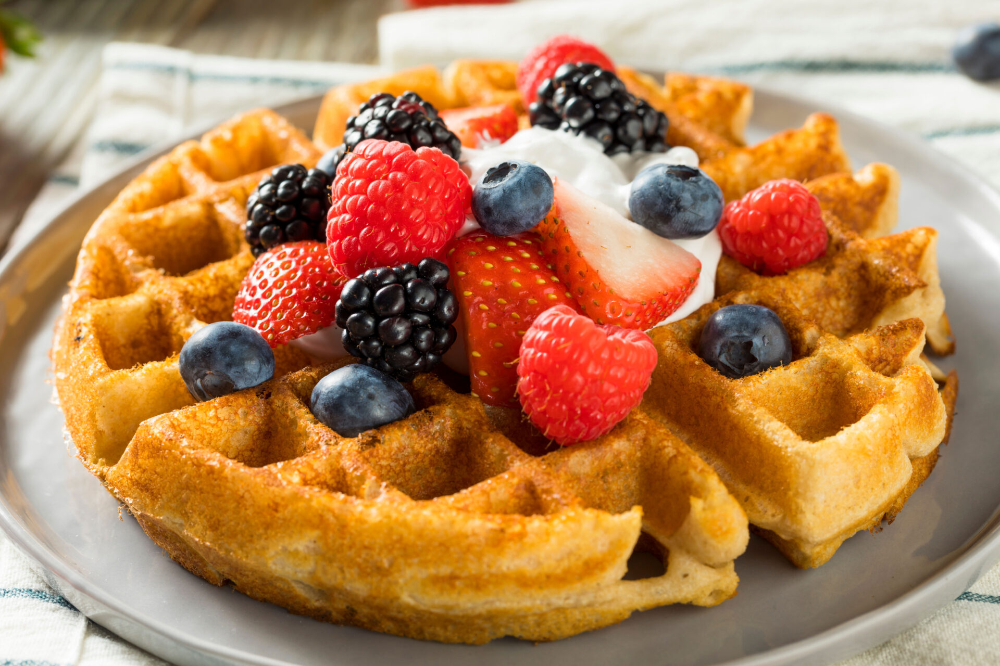

Half-Wheat Waffles

Description
Fluffy and decadent waffles made with easily accessible household ingredients, pefect for any meal.
Ingredients
- 1 1/2 tsp Sugar
- 2 eggs
- 2 1/4 cups milk
- 2/4 cup oil
- 1 1/4 cup white flour
- 1 1/4 cup wheat flour
- 4 tsp baking powder
- 3/4 tsp salt
Steps
- Combine dry ingredients(excluding sugar) in a small bowl.
- In a separate larger bowl, beat together wet ingredients and sugar.
- Mix in the dry ingredients into the larger bowl.
- Pour into waffle iron to cook.